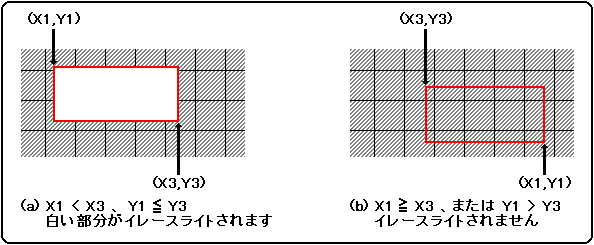

★HARDWARE Manual
★VDP1ユーザーズマニュアル
★HARDWARE Manual
★VDP1ユーザーズマニュアル
EWDR |
bit15 | bit14 | bit13 | bit12 | bit11 | bit10 | bit９ | bit８ |
bit７ | bit６ | bit５ | bit４ | bit３ | bit２ | bit１ | bit０ |
|---|---|---|---|---|---|---|---|---|---|---|---|---|---|---|---|---|
| イレースライトデータ | ||||||||||||||||
EWDR |
bit15 | bit14 | bit13 | bit12 | bit11 | bit10 | bit９ | bit８ |
bit７ | bit６ | bit５ | bit４ | bit３ | bit２ | bit１ | bit０ |
|---|---|---|---|---|---|---|---|---|---|---|---|---|---|---|---|---|
| 偶数X座標イレースライトデータ | 奇数X座標イレースライトデータ | |||||||||||||||
EWLR |
bit15 | bit14 | bit13 | bit12 | bit11 | bit10 | bit９ | bit８ |
bit７ | bit６ | bit５ | bit４ | bit３ | bit２ | bit１ | bit０ |
|---|---|---|---|---|---|---|---|---|---|---|---|---|---|---|---|---|
| 0 | 左上座標X1 | 左上座標Y1 | ||||||||||||||
EWRR |
bit15 | bit14 | bit13 | bit12 | bit11 | bit10 | bit９ | bit８ |
bit７ | bit６ | bit５ | bit４ | bit３ | bit２ | bit１ | bit０ |
|---|---|---|---|---|---|---|---|---|---|---|---|---|---|---|---|---|
| 右下座標X3 | 右下座標Y3 | |||||||||||||||
システム | 16bit／pixel | 8bit／pixel | ||||
ハイレゾリューション | 回転8 | |||||
左上座標X1 | 右下座標X3 | 左上座標X1 | 右下座標X3 | 左上座標X1 | 右下座標X3 | |
0 | 0 | 設定禁止 | 0 | 設定禁止 | 0 | 設定禁止 |
1 | 8 | 7 | 16 | 15 | 16 | 15 |
2 | 16 | 15 | 32 | 31 | 32 | 31 |
： | ： | ： | ： | ： | ： | ： |
31 | 248 | 247 | 496 | 495 | 496 | 495 |
32 | 256 | 255 | 512 | 511 | 設定禁止 | 511 |
33 | 264 | 263 | 528 | 527 | 設定禁止 | 設定禁止 |
： | ： | ： | ： | ： | ： | ： |
40 | 320 | 319 | 640 | 639 | ： | ： |
： | ： | ： | ： | ： | ： | ： |
43 | 344 | 343 | 688 | 687 | ： | ： |
44 | 352 | 351 | 704 | 703 | ： | ： |
： | ： | ： | ： | ： | ： | ： |
62 | 496 | 495 | 992 | 991 | ： | ： |
63 | 504 | 503 | 1008 | 1007 | ： | ： |
64 | 設定禁止 | 511 | 設定禁止 | 1023 | ： | ： |
65〜 | 設定禁止 | 設定禁止 | 設定禁止 | 設定禁止 | 設定禁止 | 設定禁止 |
図4.2 イレースライト領域

{(1ラスター中のピクセル数)−200 ｝×｛(1フィールド中のラスター数)−(表示ラスター数)｝
画面モード | 横ピクセル数 | 1ラスター中 | 1フィールド中 |
NTSC | 320 | 1708 | 263 |
PAL | 352 | 1820 | 313 |
31KC | − | 852 | 525 |
HDTV | − | 848 | 562 |
画面モード | 解像度（横×縦） | 使用できるピクセル数 |
NTSC | 320×224 | 58812 |
320×240 | 34684 | |
352×224 | 63180 | |
352×240 | 37260 | |
PAL | 320×224 | 134212 |
320×240 | 110084 | |
320×256 | 85956 | |
352×224 | 144180 | |
352×240 | 118260 | |
352×256 | 92340 | |
31KC | 320×480 | 29340 |
HDTV | 352×480 | 53136 |
★HARDWARE Manual
★VDP1ユーザーズマニュアル